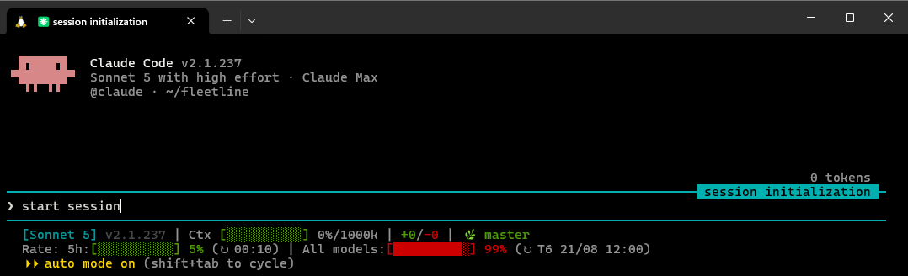

Model, context, git, rate limits, cost burn-rate, background agents — arranged in whatever order you want, separated however you want. All from one hardened bash script.

Set once in /statusline-setup, or edit the config file directly. Nothing here reflows the terminal — narrow window, and the least-important segments drop themselves before the line wraps. Want more control than three presets? Build your own order below.
The three layouts above are just presets. Underneath, every piece — model, worktree, cost, rate bars, all of it — is one flat ordered list, the same shape as powerlevel10k's prompt-elements array. Drop a piece anywhere, repeat it, skip it, and insert newline wherever you want a new line to start.
/statusline-setup, or edit the array by hand."separator": { "preset": "chevron" }, "segments": [ "worktree", "cost", "model", "context", "newline", "git", "rate5h", "rate7d" ]
Dispatch a few background sessions and it's easy to lose track of which one's still working and which one's stuck waiting on you. fleetline can show a live count right in your main line, and ships a second renderer for Claude Code's fleet view itself.
claude agents --json — throttled, so it never blocks your render on a slow poll.~N.Two samples of your cost and rate-limit usage, at least 30 seconds apart, are enough to compute a real velocity — dollars per hour, and how many minutes until your 5-hour window is gone. The TTL segment tracks how long since your last turn against Anthropic's documented cache window: 60 minutes on a subscription, 5 on an API key.
/plugin marketplace add ClaudeTool/fleetline
/plugin install fleetline
/statusline-setup
curl -fsSL https://raw.githubusercontent.com/ClaudeTool/fleetline/main/install.sh | bash
Full config reference, the fleet-view caveats, and what a statusline genuinely can't see about your session (permission mode, notifications, auto-compact) are all in the README.